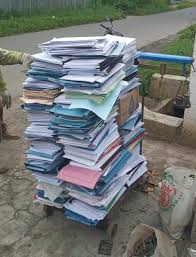
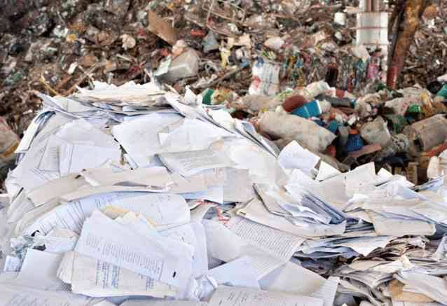
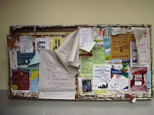

10 Liter
Air per Lembar A4
Memproduksi satu lembar kertas baru membutuhkan rata-rata 10 liter air. Membuangnya secara cuma-cuma adalah pemborosan sumber daya air global yang kian menipis.
45%
Limbah yang Terlupakan
Hampir setengah dari total sampah harian di institusi adalah kertas. Tanpa pemisahan, material ini berakhir di TPA dan melepaskan gas metana berbahaya.
324 Kg
Jejak Per Tahun
Estimasi rata-rata limbah kertas yang dihasilkan per orang. Reborn Sheet hadir untuk memutus siklus konsumsi-buang yang tidak berkelanjutan ini.

kurangnya kesadaran dalam mengelola kertas
Tumpukan kertas bekas tugas dan fotokopi di sekolah saat ini masih sering terbuang sia-sia tanpa adanya proses pemilahan yang tepat dikarenakan banyak masyarakat belum menyadari nilai una yang tinggi dari kertas yang diolah secara benar

Sistem Pengumpulan Kertas yang tidak Terstruktur
Kondisi di lingkungan masyarakat saat ini belum memiliki wadah khusus untuk mengumpulkan kertas bekas sehinggakertas-kertas tersebut berakhir di tempat sampah umum dalam keadaan tercampur plastik serta sisa makanan, yang membuatnya tidak lagi layak untuk didaur ulang

Media Edukasi dan Promosi yang tidak Sistematis
Minimnya media informasi digital seperti poster dan platform digital di sekolah mengakibatkan kurangnya informasi mengenai daur ulang di kalangan siswi dan membuat proram lingkungan menjadi sulit dikenali dan cenderung berjalan di tempat tanpa partisipasi yang signifikan
Mengubah Narasi Menjadi Aksi
Reborn Sheet hadir bukan hanya untuk mendaur ulang, tapi untuk mengembalikan martabat selembar kertas sebagai media seni yang berharga.
Lihat Bagaimana Kami Memulai